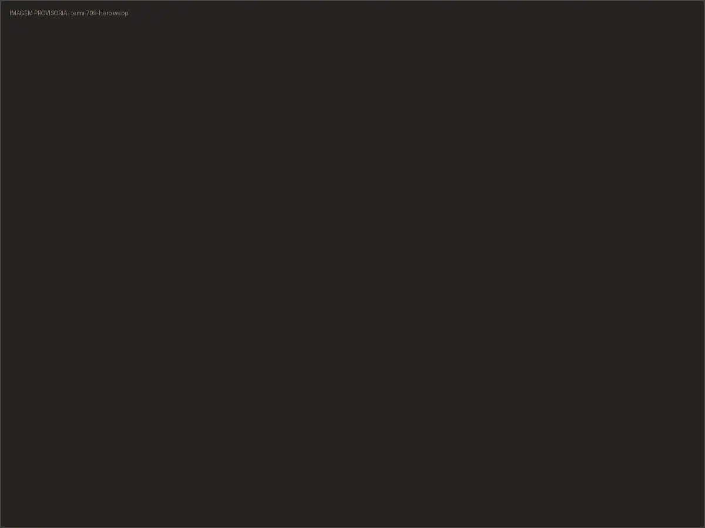

Saúde
Enfermeiros, técnicos e médicos expostos a agentes biológicos, com a ressalva da covid-19.
Aposentadoria especial do médicoPode continuar trabalhando, mas não exposto a agente nocivo. É o que diz o Tema 709 STF, julgado em 2020 e definitivo desde 01/12/2021: quem recebe aposentadoria especial e continua ou volta a trabalhar em atividade especial tem o pagamento cessado. Trabalhar em atividade comum é permitido, e os atrasados contam desde a data do pedido.

Em resumo
O STF decidiu que é constitucional a regra da Lei 8.213/1991 que proíbe continuar recebendo aposentadoria especial enquanto se trabalha exposto a agente nocivo. A tese final foi ajustada nos embargos, em 2021.
A regra discutida é o § 8º do art. 57 da Lei 8.213/1991. A tese vigente, registrada no andamento oficial, afirma ser constitucional a vedação "se o beneficiário permanece laborando em atividade especial ou a ela retorna, seja essa atividade especial aquela que ensejou a aposentação precoce ou não".
A segunda parte da tese trata de quem pede e continua trabalhando. Nesse caso, a data de início do benefício será a data de entrada do requerimento, "remontando a esse marco, inclusive, os efeitos financeiros". Depois de implantado o benefício, verificada a continuidade ou o retorno ao trabalho nocivo, "cessará o pagamento do benefício".
Porque a aposentadoria especial existe para tirar o trabalhador do ambiente que prejudica a saúde. O relator foi o Min. Dias Toffoli, e a decisão foi por maioria, vencidos Fachin, Marco Aurélio, Celso de Mello e Rosa Weber.
A linha que separa o permitido do proibido é a exposição a agente nocivo, não o fato de trabalhar. A tabela resume as situações mais comuns.
| Situação | Pode? | Explicação |
|---|---|---|
| Trabalhar em função comum, sem agente nocivo | Pode | A tese só proíbe atividade especial |
| Continuar na mesma função exposta | Não pode | O pagamento cessa depois da implantação do benefício |
| Mudar para outra atividade especial, com outro agente | Não pode | A tese vale para qualquer atividade especial, não só a que deu a aposentadoria |
| Trocar de função na mesma empresa, sem exposição | Pode | O que importa é a exposição, não o empregador |
| Abrir negócio próprio ou trabalhar por conta em atividade comum | Pode | Atividade sem agente nocivo é permitida |
| Trabalhar exposto enquanto o pedido está em análise | Pode | Os atrasados contam desde a data do pedido; a restrição começa com a implantação |
Não necessariamente. A tese não exige sair da empresa, e sim deixar a exposição ao agente nocivo. Quem consegue mudar para uma função sem exposição, como um cargo administrativo, pode continuar empregado e receber o benefício. A nova função não pode ter agente nocivo registrado no Perfil Profissiográfico Previdenciário (PPP).
Se não houver função sem exposição, a saída do emprego passa a ser uma decisão trabalhista, com efeitos sobre verbas rescisórias e FGTS. Essa conta deve ser feita antes do pedido [CONFIRMAR com o advogado: quais efeitos trabalhistas (verbas rescisórias e FGTS) citar para quem pede demissão para manter a aposentadoria especial?].
A tese diz que o pagamento cessa depois da implantação, se for verificada a continuidade do trabalho nocivo. Como o INSS comunica e qual prazo dá para o afastamento seguem as normas internas do instituto [CONFIRMAR com o advogado: qual prazo e qual procedimento o INSS adota hoje para avisar e cessar o pagamento?].
Os atrasados contam desde a data do pedido, mesmo para quem continuou trabalhando exposto enquanto esperava. O afastamento só passa a ser exigido depois que o benefício é implantado.
Antes dos embargos, a dúvida era se o trabalhador precisava sair do emprego para pedir. A tese ajustada em 24/02/2021 resolveu esse ponto: a DIB, data de início do benefício, é a DER, data de entrada do requerimento, e os efeitos financeiros também começam aí.
Você pede a aposentadoria especial e pode seguir trabalhando exposto enquanto o processo corre.
Concedido o benefício, os valores contam desde a data do pedido, administrativo ou judicial.
A partir daqui, continuar ou voltar à atividade especial leva à cessação do pagamento.
Trabalho em atividade comum é permitido e não afeta o benefício.
Houve dois julgamentos de embargos, ambos já concluídos. O primeiro ajustou a tese e protegeu decisões definitivas; o segundo suspendeu os efeitos para profissionais de saúde do combate à covid-19.
| Data | O que foi decidido |
|---|---|
| 24/02/2021 | Nova redação da tese, com a regra dos atrasados desde a DER |
| 24/02/2021 | Preservados os segurados com direito reconhecido por decisão definitiva até essa data |
| 24/02/2021 | Valores recebidos de boa-fé até a proclamação do resultado não precisam ser devolvidos |
| 15/03/2021 | Liminar do relator suspende os efeitos para profissionais de saúde na covid-19 |
| 04/10/2021 | Plenário confirma, por unanimidade, a suspensão para esses profissionais |
| 01/12/2021 | Trânsito em julgado: a decisão se torna definitiva |
O STF suspendeu os efeitos do Tema 709 para os profissionais de saúde listados no art. 3º-J da Lei 13.979/2020 que atuavam no combate à covid-19. A suspensão vale "enquanto estiver vigente a referida lei".
A medida protegeu quem trabalhava diretamente no combate à pandemia ou no atendimento de pacientes em hospitais e instituições semelhantes. Na prática, esses profissionais podiam receber a aposentadoria especial e continuar na linha de frente.
Como a suspensão foi ligada à vigência da Lei 13.979/2020, é preciso conferir se a lei ainda está vigente e se a proteção continua para cada período [CONFIRMAR com o advogado: a Lei 13.979/2020 ainda está vigente e quais períodos a suspensão do Tema 709 protege?]. Quem trabalha em hospital, laboratório ou clínica deve ver também as regras de aposentadoria especial da enfermagem e dos agentes biológicos.
Todo aposentado na aposentadoria especial do INSS que pensa em continuar trabalhando. O efeito é maior nas profissões em que é difícil achar função sem exposição.
Enfermeiros, técnicos e médicos expostos a agentes biológicos, com a ressalva da covid-19.
Aposentadoria especial do médicoMetalúrgicos, mecânicos e soldadores que costumam continuar na mesma área depois de aposentados.
Aposentadoria do metalúrgicoEletricistas que migram para serviços autônomos podem continuar expostos sem perceber.
Aposentadoria do eletricistaA regra de tempo e prova vale para todos e está no guia completo da aposentadoria especial. Desde a ADI 6309, que derrubou a idade mínima, mais trabalhadores podem se aposentar cedo e precisam planejar o que fazer depois.
Pode, desde que em atividade comum, sem exposição a agente nocivo. Continuar ou voltar a trabalhar exposto, na mesma atividade ou em outra, leva à cessação do pagamento depois que o benefício é implantado.
Não. Você pode pedir e continuar trabalhando enquanto o INSS analisa, e os atrasados contam desde a data do pedido. Depois da implantação, é preciso deixar a exposição, o que pode ser feito com troca de função.
Pela tese, não. Os efeitos financeiros remontam à data do requerimento, mesmo para quem continuou trabalhando exposto durante a análise. A cessação atinge o pagamento depois da implantação.
Não. A tese vale para qualquer atividade especial, seja aquela que deu a aposentadoria ou outra. Trocar ruído por químicos, por exemplo, também leva à cessação do pagamento.
No STF, não há recurso pendente: o processo transitou em julgado em 01/12/2021. Mudanças dependeriam de nova lei ou de novo entendimento em outro processo.
Vale para qualquer atividade especial, com ou sem carteira assinada. O contribuinte individual que continua exposto também tem o pagamento cessado. Veja as regras de aposentadoria especial do contribuinte individual [CONFIRMAR com o advogado: o INSS aplica a cessação do Tema 709 ao contribuinte individual da mesma forma que ao empregado?].
Os embargos de 24/02/2021 declararam que valores alimentares recebidos de boa-fé até a proclamação do resultado não precisam ser devolvidos. A aplicação ao seu caso depende das datas e do tipo de decisão.
O advogado confere seu tempo especial e o melhor momento para pedir, considerando o Tema 709.
Tema 555 do STF explicado: quando o EPI eficaz tira o tempo especial e por que o ruído é exceção. Veja como a…
Ler sobre tema 555 do STF: EPI e ruídoTema 1090 do STJ: EPI eficaz no PPP afasta o tempo especial em princípio, mas a falha pode ser provada. Envie seu…
Ler sobre tema 1.090 do STJ: EPI eficaz no PPPTema 1031 do STJ admitia tempo especial ao vigilante, mas o Tema 1209 do STF decidiu o contrário. Envie seu PPP de…
Ler sobre tema 1031 do STJ: vigilanteTema 1083 do STJ: ruído variável se mede pelo NEN; sem ele, vale o pico com perícia judicial. Envie seu PPP para…
Ler sobre tema 1083 do STJ: ruído variável![Retrato do advogado Dr. Renato [PREENCHER: sobrenome]](../../assets/img/advogado-retrato.webp)
Dr. Renato [PREENCHER: sobrenome]
OAB/GO [PREENCHER] · Advogado previdenciário com atuação em aposentadoria especial e PPP.